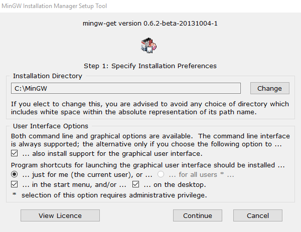
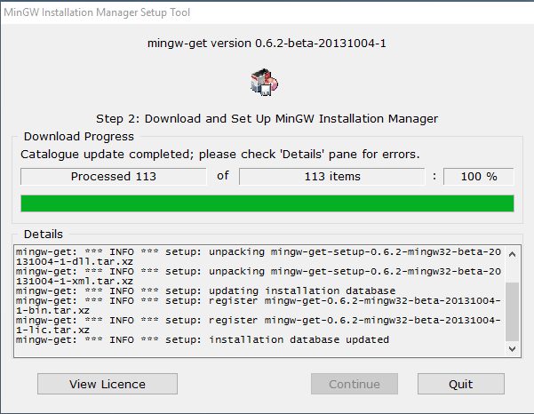
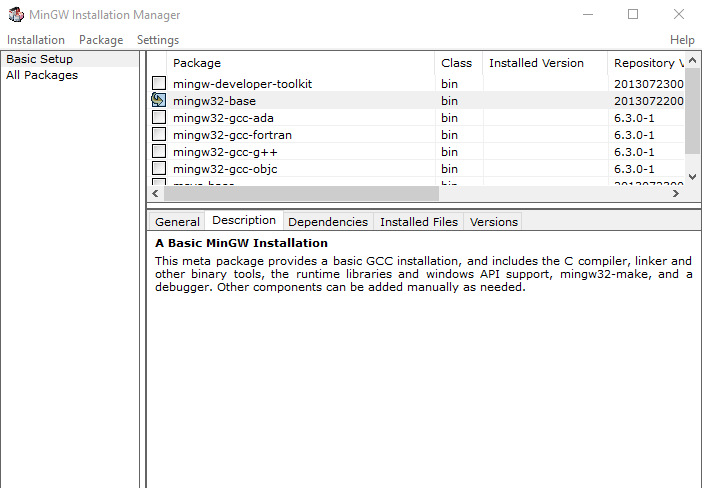
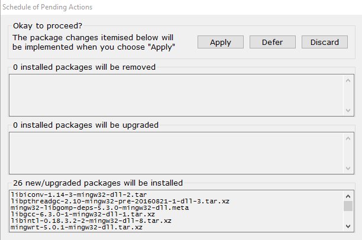
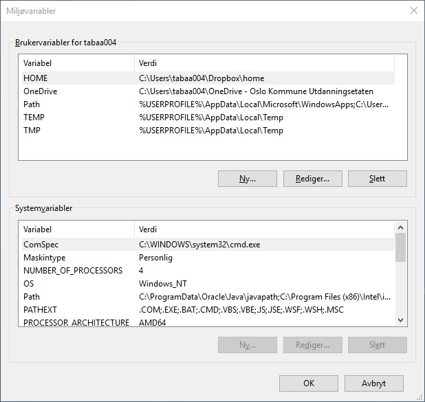
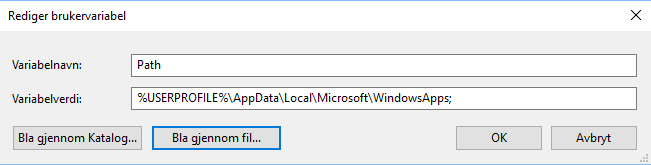
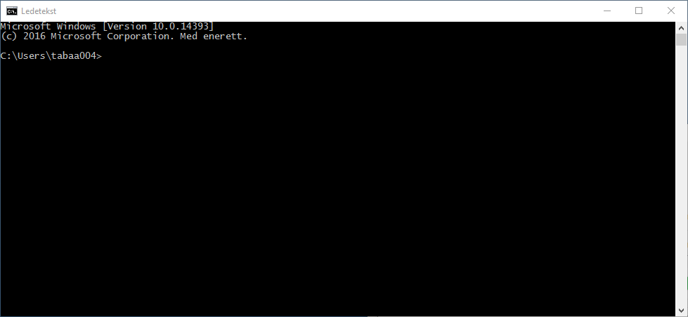
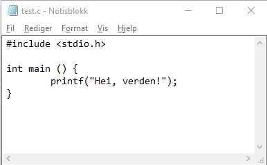
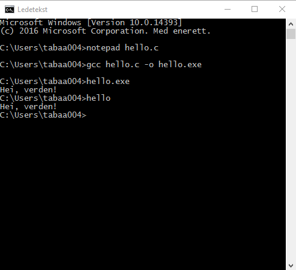

Installering av C
Introduksjon
Framfor å kjøre programmene våre via for eksempel jdoodle.com, kan vi installere en C-kompilator på vår egen maskin.
Windows
På en Windows-maskin må vi gjennom følgende punkter:
- Laste ned installasjonsfila
- Installere kompilatoren og ønskede pakker
- Fortelle Windows hvor du har lagt programmet
Laste ned installasjonsfila
Installere kompilatoren og ønskede pakker
Steg 1
Vinduet ser nå omtrent ut som følger:

Behold gjerne installasjonsmappa som C:\MinGW. Om du velger å endre den, noter deg hvor du legger det inn.
Steg 2
MinGW lastes nå ned og legges inn på maskinen. Vinduet ser omtrent ut som følger i noen minutter:

Velg Continue når alt er klart.
Steg 3
Vi får nå opp alternativer for hvilke kompilatorer vi ønsker å legge inn. Til vårt bruk holder det med mingw32-base. Trykk på firkanten ved siden av mingw32-base og velg Mark for installation.

Velg deretter Installation og Update Catalogue. I vinduet som kommer frem, velg Review Changes.
Vi får nå opp et vindu over hvilke endringer som er på vei til å bli gjort. Velg Apply for å gjøre endringene.

Steg 4
Pust ut. Kompilatoren ligger nå klar på maskinen din.
Fortelle Windows hvor du har lagt programmet
Windows veit ennå ikke om kompilatoren du har lagt inn på maskinen. Trykk windows-tasten eller nederst til venstre på skjermen og skriv ordet miljøvariabler. Velg «Rediger miljøvariabler for kontoen din». Du får opp et vindu à la:

Vi skal nå redigere variabelen kalt Path. (Om den ikke finnes allerede, kan du opprette en ny variabel ved å trykke Ny.... Velg Path og trykke Rediger....

Vi trenger nå installasjonsmappen fra i stad, standarden var C:\MinGW. Etter semikolonet i Path, skriv inn C:\MinGW\bin;. For eksempelet over vil Path nå være %USERPROFILE%\AppData\Local\Microsoft\WindowsApps;C:\MinGW\bin;.
Velg OK og OK. Vi har nå lagt kompilatoren inn i området Windows leiter etter programmer.
Vi er klare til å skrive vårt første program.
Ditt første C-program
Trykk på windows-tasten på tastaturet eller nederst til venstre på skjermen og skriv ledetekst og trykk enter. Dere vil nå få opp kommandolinja til Windows.

For å åpne en tom fil i notisblokk, kan du nå skrive notepad hello.c, hvor hello.c er filnavnet på fila vi ønsker. Bekreft at du ønsker å opprette fila.
Vårt første program kan for eksempel være som følger (her bruker jeg tabulatortasten for å få mellomrommet før printf):

Lagre fila og lukk notisblokk.
Vi kan nå kompilere fila til et kjørbart program ved å skrive
gcc hello.c -o hello.exe
(Om vi ikke tar med -o hello.exe får fila navnet a.exe.)
Trykk enter. Programmet ditt er nå klart til å kjøres!
Du kan nå kjøre programmet ved å skrive hello.exe eller bare hello.
